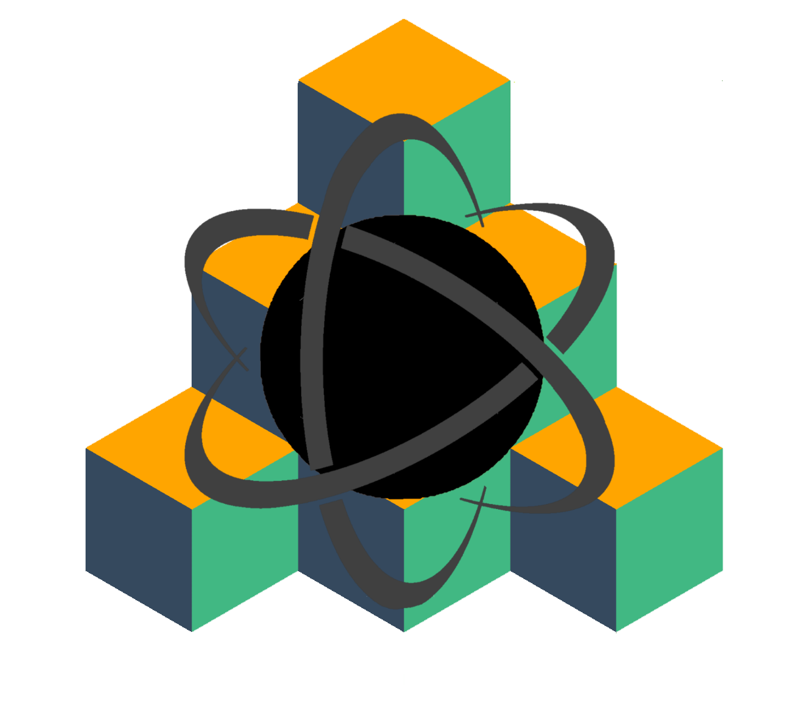

Description
Neutronium.BuildingBlocks provides opinionated solutions to build Neutronium application:
ApplicationToolsprovides interfaces for common application features such as native message box, native file and directory picker...Wpfprovides an implementation forApplicationToolsinterfaces based on Wpf framework.Applicationprovides solution for application architecture including:- routing (integrated with vue via vue-cli-plugin-neutronium).
- Dependency injection for main View-models
- API for modal and notifications
SetUpaims at making it easy to switch between different debug modes and make the usage oflive reloadeasy. It provides utility to run npm scripts and to manage application mode.
Neutronium Visual Studio templates show cases usages of Neutronium.BuildingBlocks.
See also Neutronium.SPA.Demo and Neutronium.Simple.Template for corresponding sample usage.
Context
By provided MVVM bindings compatible with Wpf, Neutronium is an unopinionated framework that leaves the users free to build its application logics.
Neutronium.BuildingBlocks fills the gap between an hello-world example and a complete application by solving some common challenges such as routing, dependency injection or layer isolation.